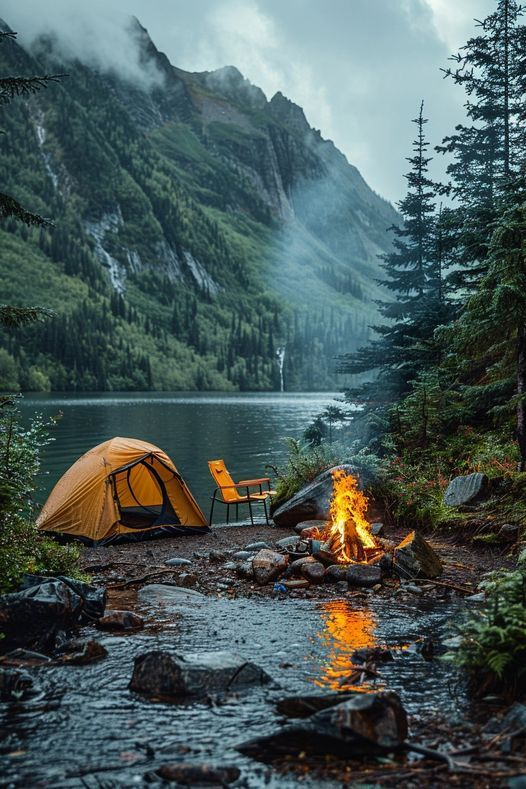

My Fire Island Adventure
My recent trip to Fire Island was nothing short of magical. From the moment I stepped off the ferry, I was captivated by the pristine beaches, the rhythmic sound of crashing waves, and the untouched natural beauty that defines this special place.

Highlights of my journey included hiking through the Sunken Forest, a unique maritime holly forest that feels like stepping into another world. Walking along the boardwalks surrounded by ancient, windswept trees was a truly humbling experience.

The wildlife encounters were unforgettable - from spotting seals basking on distant sandbars to watching flocks of migratory birds along the shoreline. Each sunset painted the sky in breathtaking hues of orange, pink, and purple, creating perfect moments of tranquility.

Fire Island offers a rare escape from the hustle of everyday life, where you can truly disconnect and immerse yourself in nature's wonders. Whether you're seeking adventure or simply a peaceful retreat, this coastal gem has something for every traveler.